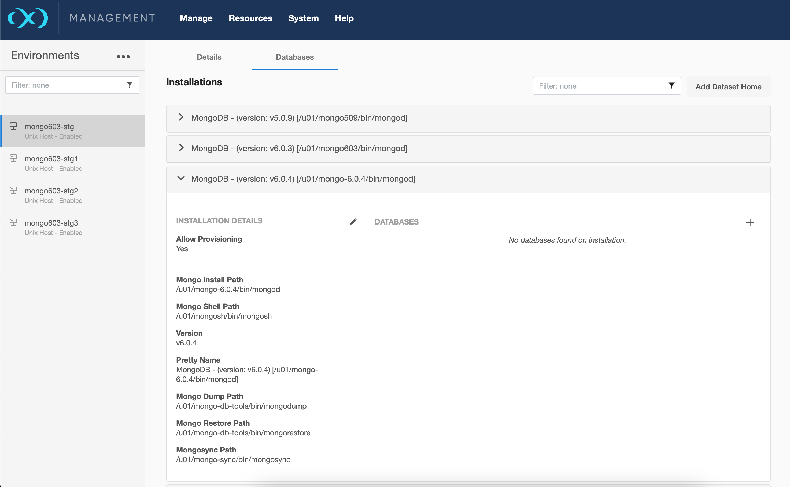
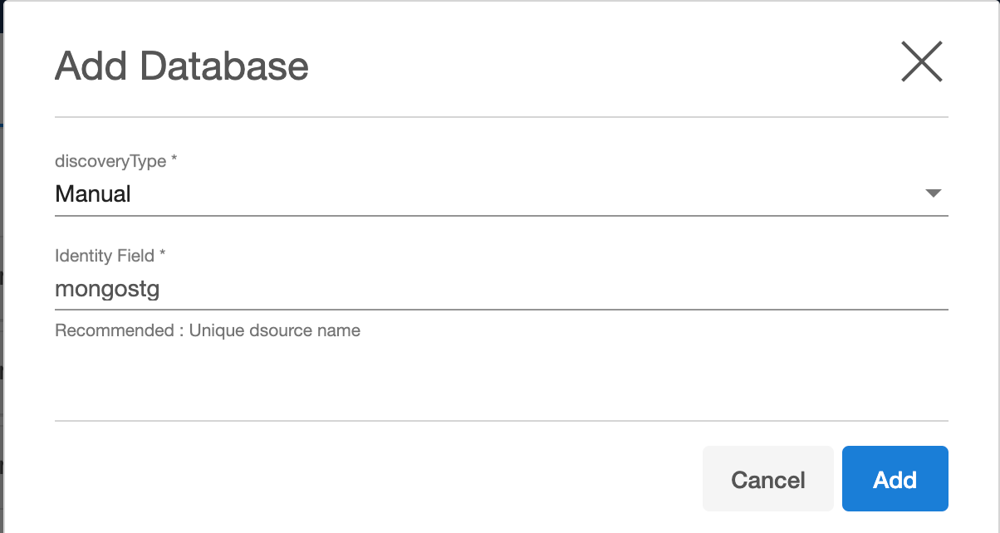
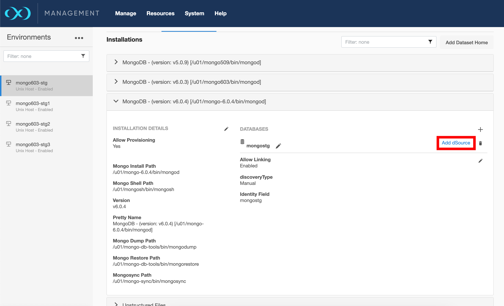

Linking
Linking a data source will create a dSource object on the engine and allow Delphix to ingest data from this source. The dSource is an object that the Delphix Virtualization Engine uses to create and update virtual copies of your database.
Prerequisites
- Install delphix engine 7.0 and above
- Install mongo binaries on staging host
- Execute Discovery on staging host
- For shardedsource(Cluster to Cluster Sync),
- Please refer the following pre-requisites and limitations
- User Permissions(syncType: default, Target: source cluster) for the source cluster.
- Limitations
- For larger datasets,
- Physical RAM size should atleast be 64GB or greater on the staging host.
- Refer Oplog size requirements for the source cluster.
- To limit the MongoDB memory utilisation at staging cluster, set the following
parameter with appropriate value, in the “Set Parameter” section of
“Add dSource” UI page.
- wiredTigerCacheSizeGB
- Please refer the following pre-requisites and limitations
Create Sourceconfig
Every environment contains repositories and each environment may have any number of repositories associated with it. Repository represents the binaries for mongo instance. Each repository can have many SourceConfig which represent mongo instance. There is no sourceconfig generated automatically in mongo-plugin. We need to configure SourceConfig objects through which we can create a dSource.
- Login to the Delphix Management application.
- Click Manage.
- Select Environments.
- Select the repository
-
Click on
+icon ( Shown in next image )
-
Add required details in Add database section.
identity field: Proivide unique name for staging databasediscoveryType: Keep it as manual-
Click Add button

Create dSource
dSource is delphix representation of source database copy. Following are the steps to create dSource.
- Login to Delphix Management application.
- Click Manage > Datasets
- Click on Add dSource. 
- In the Add dSource wizard, select the mongo source config you just created on the staging host.
- Select the dSource type from the drop-down available on dSource wizard. Refer different dSource Types
- Enter the mongo-specific parameters for your dSource configuration.
- Proceed with wizard and submit to create dSource.
Note: For stagingpush dSource Type, Please ignore 1st snapshot. Once the staging instance is created by user, take a new snapshot and delete all previous snapshots to avoid empty datafile/file provisioning.
dSource Parameters
| Parameter | Description | dSource Type |
|---|---|---|
| dSource Type | Type of dSource | shardedsource, nonshardedsource, offlinemongodump, onlinemongodump, extendedcluster, seed, stagingpush |
| Source MongoDB Host Connect String | Source Instance Connect String / Mongos Connection String (sharded mongosync) / Staging Instance Connect String (for stagingpush) | onlinemongodump, extendedcluster |
| Replicaset Name | Source Replicaset name (for RESTORE MONGO DATABASE BACKUP USING MONGO OPS MANAGER [ NON-SHARDED ONLY ]) | stagingpush |
| MongoDB Source Database User | Source database user / Staging Instance Connect String (for stagingpush) | onlinemongodump, extendedcluster |
| MongoDB Password | Source database password / Staging Instance Connect String (for stagingpush) | onlinemongodump, extendedcluster |
| Cluster to Cluster Sync (ONLY for shardedsource) | Check box to enable cluster to cluster sync between source and staging cluster (for shardedsource) | shardedsource |
| Mongosync Port Number (ONLY for Cluster to Cluster Sync) | Available port for mongosync utility of staging host (Mandatory for cluster-to-cluster sync) | shardedsource |
| Capture oplogs of replicaset (ONLY for onlinemongodump) | Capture oplogs while running online mongodump | onlinemongodump |
| Staging MongoDB Host | Staging host for creating dSource | shardedsource, nonshardedsource, offlinemongodump, onlinemongodump, extendedcluster, seed, stagingpush |
| Staging Port | Staging host Port for Mongo dSource Instance | shardedsource, nonshardedsource, offlinemongodump, onlinemongodump, extendedcluster, seed, stagingpush |
| Mongos Port | Port to be used for mongos router instance | shardedsource |
| bindIP String | IP Binding - default 0.0.0.0 | shardedsource, nonshardedsource, offlinemongodump, onlinemongodump, extendedcluster, seed, stagingpush |
| Oplog Size | Size of oplogs | shardedsource, nonshardedsource, offlinemongodump, onlinemongodump, extendedcluster, seed, stagingpush |
| Journal commit Interval | Journal commit Internal in ms | shardedsource, nonshardedsource, offlinemongodump, onlinemongodump, extendedcluster, seed, stagingpush |
| Storage Engine | Storage Engine - wiredTiger | shardedsource, nonshardedsource, offlinemongodump, onlinemongodump, extendedcluster, seed, stagingpush |
| Mount Path | Mount Path for dsource mongo instance datafiles | shardedsource, nonshardedsource, offlinemongodump, onlinemongodump, extendedcluster, seed, stagingpush |
| Backup Metadata File Name | File that contains backup datetime - Content : MMDDYYYY_HH24MISS | shardedsource, nonshardedsource, offlinemongodump |
| Mongo Admin User | Mongo Admin User on Staging Host | shardedsource, nonshardedsource, offlinemongodump, onlinemongodump, extendedcluster, seed, stagingpush |
| MongoDB Password | Mongo Admin User Password on Staging Host | shardedsource, nonshardedsource, offlinemongodump, onlinemongodump, extendedcluster, seed, stagingpush |
| Config Server Backup File (sharded mongo) replicaset backup file (nonsharded mongo) Backup directory for Mongodump |
Config Server Backup File Name replicaset backup file (nonsharded mongo) Backup directory for Mongodump Refer: backup formats |
shardedsource, nonshardedsource, offlinemongodump |
| Shard Backup Files | Shard Backup File Full Path. Add File for each Shard. 1 file per shard Refer: backup formats |
shardedsource |
| Enable SSL/TLS | Enable SSL/ TLS | shardedsource, nonshardedsource, offlinemongodump, onlinemongodump, extendedcluster, seed, stagingpush |
| SSL/TLS Parameters | SSL/TLS Parameters (e.g. tlsMode, tlsCAFile, tlsPEMKeyFile, sslAllowConnectionsWithoutCertificates etc) | shardedsource, nonshardedsource, offlinemongodump, onlinemongodump, extendedcluster, seed, stagingpush |
| Enable Authentication | Enable Authentication | shardedsource, nonshardedsource, offlinemongodump, onlinemongodump, extendedcluster, seed, stagingpush |
| keyfile_path | KeyAuth keyfile name (Full Path) | shardedsource, nonshardedsource, offlinemongodump, onlinemongodump, extendedcluster, seed, stagingpush |
| Cluster Auth Mode | None, keyFile, x509, sendKeyFile, sendX509 | shardedsource, nonshardedsource, offlinemongodump, onlinemongodump, extendedcluster, seed, stagingpush |
| Source is Encrypted | Does source mongo instance use encryption ? | shardedsource, nonshardedsource, offlinemongodump, onlinemongodump, extendedcluster, seed, stagingpush |
| Source Encryption Method | KeyFile, KMIP | shardedsource, nonshardedsource, offlinemongodump, onlinemongodump, extendedcluster, seed. stagingpush |
| Local Encryption Keyfile | Full path of KeyFile if used for encryption | shardedsource, nonshardedsource, offlinemongodump, onlinemongodump, extendedcluster, seed. stagingpush |
| KMIP Parameters | KMIP Parameter details ( e.g. kmipClientCertificateFile, kmipPort, kmipServerCAFile, kmipServerName ) | shardedsource, nonshardedsource, offlinemongodump, onlinemongodump, extendedcluster, seed. stagingpush |
| Enable LDAP | Enable LDAP Authentication / Authorization | shardedsource, nonshardedsource, offlinemongodump, onlinemongodump, extendedcluster, seed. stagingpush |
| LDAP Parameters | LDAP Parameter details ( e.g. ldapBindMethod, ldapQueryPassword, ldapServers, ldapTimeoutMS ) | shardedsource, nonshardedsource, offlinemongodump, onlinemongodump, extendedcluster, seed. stagingpush |
| Enable Auditlog | Enable Auditlog Parameters | shardedsource, nonshardedsource, offlinemongodump, onlinemongodump, extendedcluster, seed. stagingpush |
| Auditlog Parameters | Auditlog Parameter details ( e.g. auditDestination, auditFilter ) | shardedsource, nonshardedsource, offlinemongodump, onlinemongodump, extendedcluster, seed. stagingpush |
| Enable SetParams | Enable SetParams | shardedsource, nonshardedsource, offlinemongodump, onlinemongodump, extendedcluster, seed. stagingpush |
| SetParams Parameters | SetParams Parameter details ( e.g. authenticationMechanisms, opensslCipherConfig ) | shardedsource, nonshardedsource, offlinemongodump, onlinemongodump, extendedcluster, seed. stagingpush |
| Client Certificate for Mongos / Mongo Session on Primary Node | Client Certificate for Mongos / Mongo Session on Primary Node | shardedsource, nonshardedsource, offlinemongodump, onlinemongodump, extendedcluster, seed. stagingpush |
| Client CA Certificate for Mongos / Mongo Session on Primary Node | Client CA Certificate for Mongos / Mongo Session on Primary Node | shardedsource, nonshardedsource, offlinemongodump, onlinemongodump, extendedcluster, seed. stagingpush |
Following Sections are in form of Parameter Name and Value format. Add as many parameters needed by clicking on +Add button.
- SSL/TLS Parameters
- KMIP Parameters
- LDAP Parameters
- Auditlog Parameters
- SetParams Parameters
Note:
- Any parameters specified for above section need to be compatible with
mongod/mongoscommand line parameters. - Please refer Mongo Documentation for appropriate names of parameters.
- Please do not specify “–” when adding any parameters.
- Sample Parameters are as below for SSL/TLS Parameters section
- tlsMode
- tlsCAFile
- tlsPEMKeyFile
- sslAllowConnectionsWithoutCertificates
Expected backup types for each dsource type:
| dSource Type | Backup format |
|---|---|
| shardedsource | tar backup files from Mongo Ops Manager (one for config server and one for each shard) |
| nonshardedsource | tar backup files from Mongo Ops Manager (one for replicaset server) |
| offlinemongodump | Mongodump backup directory (one for replicaset server) |
For dSource type of offlinemongodump, nonshardedsource and shardedsource (without cluster to cluster sync), Backup Metadata File parameter is mandatory. Content of this file should be a single line datetime value specified in format of MMDDYYYY_HH24MISS. This content lets delphix know if there is any new backup uploaded on staging host, different from previous snapshot. Delphix checks this file based on snapsync policy to find if new backup is available for ingestion. No other checks on backups are done. If date is updated, delphix assumes there are new backup files available in backup location. Delphix will reingest backup and take new snapshot.
This file need to be updated manually OR as a part of backup/copy script. Following command can be added to backup script that will be executed as soon as the backup is successful or backup copy is successful.
echo "`date '+%m%d%Y_%H%M%S'`" > /FULL_PATH_TO_METADATA_FILE/mongo_bkp_metadata.txt
For shardedmongo, 1 configserver backup file and 1 backup file per shard is expected. It is important to keep name of backup files same for every new backup. If the file names are changed, it need to be updated in GUI parameters every time a new backup is uploaded. It is recommended to use some standard naming convention for sharded backups.
Sample as below.
- configsvr_bkp.tar.gz
- myShard_n_bkp.tar.gz ( where n = 0 to total number of shards )
e.g.
- configsvr_bkp.tar.gz
- myShard_0_bkp.tar.gz
- myShard_1_bkp.tar.gz
- myShard_2_bkp.tar.gz